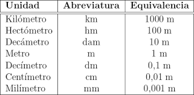

¿Qué es un conversor de unidades?
Un conversor de unidades es una herramienta que te permite convertir una cantidad de una unidad de medida a otra unidad de medida. En este conversor, puedes convertir medidas de temperatura, moneda y longitud.
Tipos de conversión disponibles
- Temperatura: Convierte entre Celsius, Fahrenheit y Kelvin.
- Moneda: Convierte entre Dólares Americanos, Euros, Pesos Mexicanos y Pesos Colombianos.
- Longitud: Convierte entre Metros, Kilómetros, Pies y Millas.
Cómo utilizar el conversor
- Selecciona el tipo de conversión que deseas realizar en el menú desplegable.
- Selecciona la unidad de medida de origen y la unidad de medida de destino en las secciones correspondientes.
- Ingresa el valor que deseas convertir en el campo "Valor".
- Haz clic en el botón "Convertir".
El resultado de la conversión se mostrará en la sección "Resultado". Si ocurre algún error durante la conversión, se mostrará un mensaje de error en la sección "Error".
Recursos adicionales
Para obtener más información sobre los conversores de unidades, puedes visitar los siguientes sitios web: